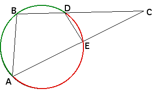

|  |
| The arc determined by angle AED and the arc determined by angle ABD are complementary, so they add to 2*pi. |
| The measures of AED and ABD are one half the measures of the arcs they determine, consequently |
| AED + ABD = pi |
| Also, note AED + DEC = pi. |
| Consequently, ABD = DEC. |
| Because triangles ABC and DEC share the angle BCA, they are similar. |
| Ratios of corresponding sides are equal, so |
| CD/CA = CE/CB. |
| and |
| CD*CB = CA*CE |
| That is, for any point C outside a circle, and any line through C intersecting the circle in
two points, P and Q (B and D, or A and E in the figure),
the product |
Return to Circles invert to circles.